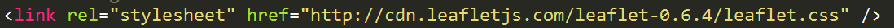
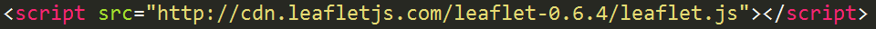

Hell yes, Leaflet! (or, Let's Make a Web Map)
PLEASE interrupt me to ask questions.
To follow along: https://lyzidiamond.com/maptimepdx/leaflet/
While I'm talking, please download a text editor if you don't have one already. I recommend Sublime Text 2.
First of all: What characterizes a web map?
1: Tiles*
*(This isn't ALWAYS the case, but we'll pretend it is for now.)
"... web maps are made up of many small, square images called tiles."
"These tiles are typically 256x256 pixels and are placed side-by-side in order to create the illusion of a very large seamless image."
You may be asking yourself: But what about when I zoom in? How come the resolution stays so good?
Well, each zoom level has its own set of tiles!
Zoom level 0: 1 tile for the world.
With each additional zoom level, the number of tiles increases exponentially.
Zoom level 1: 4 tiles for the world.
Zoom level 2: 16 tiles for the world.
Any guesses how many tiles are in zoom level 3?
Aw yeah, you got it. 64! Y'all are great at math.
Map tiles only render when you're looking at them in that moment, so tiles make maps hella fast.
Map tiles are just images on the web, so you can link to them individually.
In order to understand how this works, let's break down the URL.
https://tile.openstreetmap.org/4/2/3.png -- this is the name of the tile server.
https://tile.openstreetmap.org/4/2/3.png -- this is the z value, or the zoom level.
https://tile.openstreetmap.org/4/2/3.png -- This is the y/x value, or the place in the grid where the tile lives.
In a little bit, we will look at how to include tiles in our web map.
2: Feature Layers*
Feature layers are map layers that live on top of your base tiles. Sometimes you can interact with them (clicking to produce a popup, for example).
They are often vector layers (points, lines, polygons).
*(Not every web map contains a feature layer, but they are fairly typical.)
What data types can we use for adding feature layers to a web map?
KML is another. So is TopoJSON. And even SVG.
Some mapping libraries allow you to define vector data points within your script itself.
But we're getting ahead of ourselves. There's one more thing that makes a web map:
3: It's on the web!
This means you need to embed your map in an HTML page.
And in order to allow you to zoom and pan and add tooltips, you need some JavaScript.
Fortunately, we have mapping libraries that can help us out!
The one we're going to play with today is called Leaflet.
So with all of that functionality available, it should take us no time to make a map!
Let's go to it.
The full example is at https://lyzidiamond.com/leaflet.html (map) and https://lyzidiamond.com/leaflet.md (HTML).
First, open your text editor, create a new file, and save it as an HTML file.
You can call the file whatever you want, but make sure the file extension is .html.
An HTML file is broken into two parts: head and body.
The head section includes styling, links to external resources, and other things the page might need to load properly.
The body section includes all the elements that will be rendered on the page.
Oh: and the whole thing should be bookended by html tags.
In order to make our web map work, there are several things that need to be added to the head section of the page.
First, we need to add the Leaflet CSS file to the page. This allows us to add predefined mappy elements.
Add this to the head: 
Then we need to add the Leaflet JavaScript file. This will allow us to make a map object in which we can pan, zoom, and do other mappy activities.
Add this to the head: 
Finally, we need to add some of our own CSS to make the map as big or small as we want. We'll set it to a height of 600 pixels.
Add this to the
head:

Now let's add some code inside the body.
Step one is to make a div to contain our map.
Add this to the
body:

Great! Now we have a div that will contain our map, and we've added the scripts and stylesheets we will need to access.
Now, let's make it do stuff!
Inside the body, add a script tag.
Add this to the
body:

We will be making a map of Portland using OpenStreetMap tiles.
The first step is to initialize a map, set its view to Portland, and set a zoom level.
Add this inside the
script tag:

Hooray! Now there's a map in our map div, with the center in the Willamette River, set at zoom level 14.
But... there's nothing on the map. We have to add some map tiles!
Add this inside the
script tag:

Now we have to close the script tag, close the body tag, and close the html tag.
Add this to the end:

Go ahead and open up your HTML file in your browser. Do you see a map?
Awesome!
But a map of just tiles is kind of boring, right? Let's add a map marker.
The lat/lon for our current location (the Esri office) is [45.516469, -122.676208]. Let's add a marker here.
Add this inside the
script tag:

Reload your HTML in the browser. There's totally a map marker on SW 3rd and Salmon!
Go ahead and click on the marker. Does anything happen?
Nope. Let's do something about that. Let's give that point a popup.
Leaflet really likes popups. They're baked right into the JavaScript library! Let's add one for our marker that says "EsriPDX" on it.
Add this inside the
script tag:

Reload and click on the marker. Does the popup appear?
Hooray! It totally does! We made a popup!
In reference to the feature layers we talked about earlier: in addition to adding individual points, you can totally add full data layers on top of a Leaflet map.
That's a project for another time, though. :)
The Leaflet Quick Start Guide continues here to handle events and a couple other things, but let's take a quick assessment.
What did we do today?
We learned how map tiles work.
We broke down the different pieces of a web map.
We talked about the structure of an HTML file.
We made a web map of Portland with a map marker on it!
This is a lot. Give yourself a pat on the back.
So... What's next?
Learn about other mapping libraries. For example, you can learn about MapBox.js over at
mapbox.com/mapbox.js.
Download TileMill at
tilemill.com and make your own map tiles for use in future maps!
As you saw today, web maps are totally awesome. And you know what the best part is?
This is just the beginning.
Thanks.
Lyzi Diamond; @lyzidiamond on GitHub and Twitter; lyzidiamond@gmail.com

{kind=link}